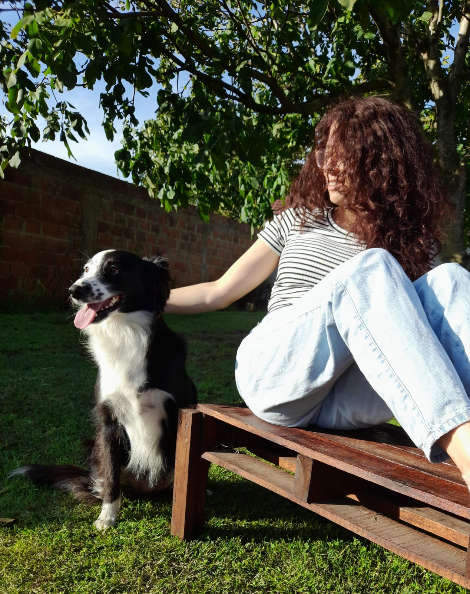

<section  id="about-me">
    <div class="w-full text-left pl-4 md:pl-4 mb-4" style="margin-top: 15vh;">
        <h2 class="text-4xl font-bold text-gray-700 relative inline-block w-fit">
          <span class="relative z-10 px-2">{{title}}</span>
          <span class="absolute left-0 bottom-1/2 translate-y-1/2 w-full h-1/2 bg-[#faedeb] -z-10 rounded-md"></span>
        </h2>
      </div>

<div class="w-full flex flex-col items-center mt-[7vh]">
 <div class="w-[85vw] mx-auto flex flex-row items-center justify-center gap-6 mb-6 fade-in">
 
    <div class="w-[20%] flex-shrink-0">
      
    </div>

    <div class="w-[70%] text-gray-600 text-base text-justify leading-relaxed flex flex-col gap-4">
      <p>{{description1}}</p>
      <p>{{description2}}</p>
    </div>
  </div>
  
  <div class="w-[85vw] mx-auto flex flex-row items-center justify-center gap-6 mb-6 fade-in">
  
    <div class="w-[70%] text-gray-600 text-base text-justify leading-relaxed flex flex-col gap-4">
      <p>{{description3}}</p>
      <p>{{description4}}</p>
    </div>

    <div class="w-[20%] flex-shrink-0">
      
    </div>
  </div>
</div>

<div class="w-[70vw] mx-auto border-t mt-12" style="border-color: #faedeb;"></div>
</section>